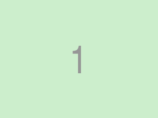
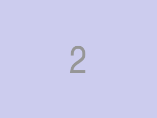

Даны два неориентированных графа без петель. Требуется проверить, являются ли графы изоморфными.
В первой строке находятся два числа и — число вершин и рёбер первого графа соответственно ().
В каждой из следующих строк расположена пара чисел от 0 до , означающая, что вершины и соединены ребром.
Далее абсолютно аналогичным образом задаётся и второй граф.
Выведите одну строку YES, если графы являются изоморфными, и NO в противном случае.
| стандартный ввод | стандартный вывод |
|---|---|
| 5 3 1 2 2 3 3 4 5 3 1 3 3 2 2 4 | YES |

| стандартный ввод | стандартный вывод |
|---|---|
| 5 2 1 2 1 3 5 1 1 2 | NO |

| стандартный ввод | стандартный вывод |
|---|---|
| 5 2 1 2 1 3 5 1 1 2 | NO |